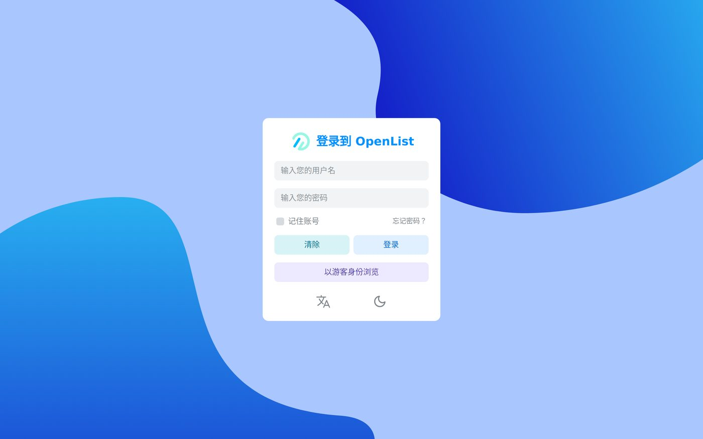
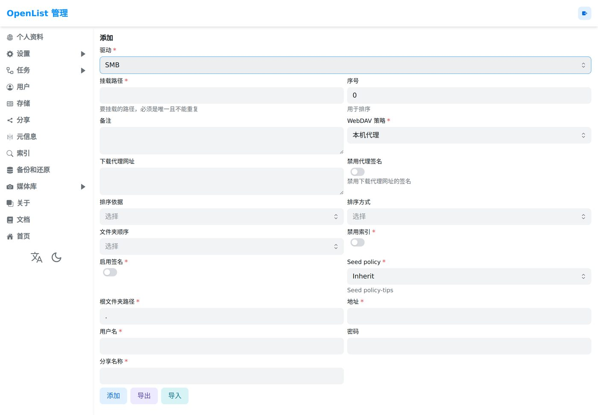
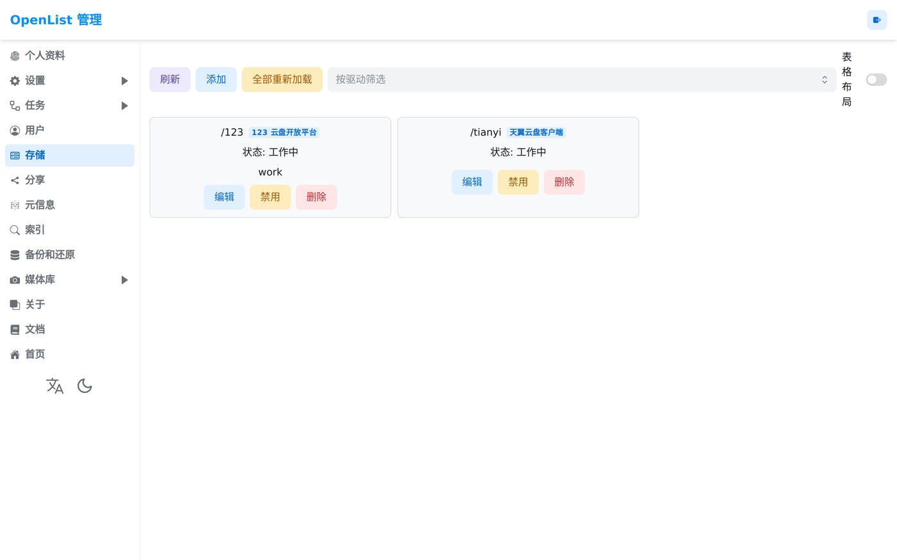
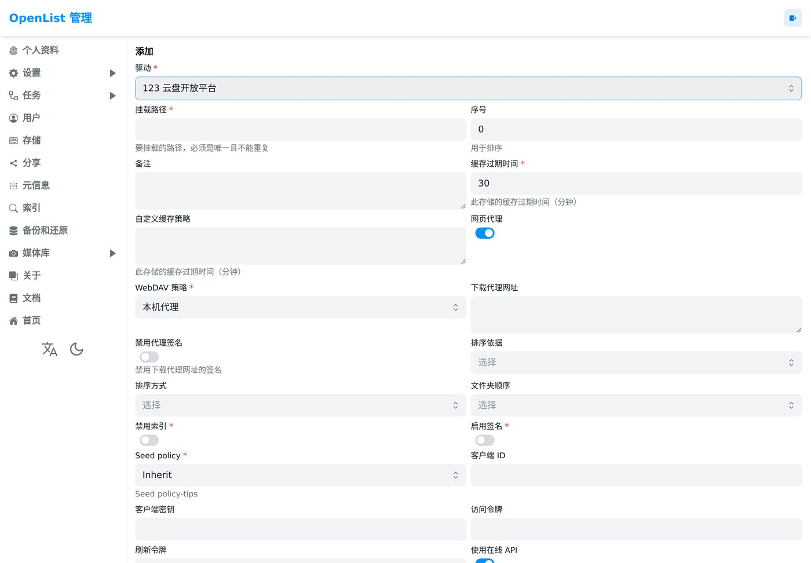
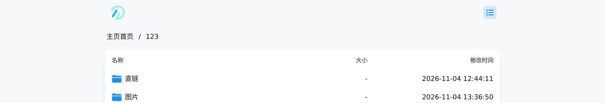
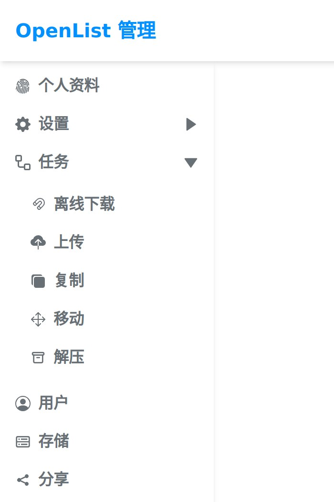

准备工具包
只有一个压缩包，解压出来是一个 openlist.exe。不用安装，删掉文件夹就等于卸载干净。
- 1打开
github.com/OpenListTeam/OpenList/releases/latest - 2在文件列表里点
openlist-windows-amd64.zip - 3下完把 zip 拖到桌面，右键 → 全部解压，别在压缩包里直接双击
带 -lite 的包也能用，只是支持的格式少一些。老机器或 Win7 见右表。
| 你的机器 | 下这个 |
|---|---|
| 64 位 Win10/11 | openlist-windows-amd64.zip 首选 |
| 64 位但启动报错 | openlist-windows-amd64-lite.zip |
| Win7 / 很老的机器 | openlist-windows7-amd64.zip |
| 32 位系统 | openlist-windows-386.zip |
在本机跑起来
双击它只会闪一下黑窗口就没了，它在等命令。要在那个文件夹里开一个 PowerShell，把 server 敲进去。
- 1打开解压出来的文件夹，点一下地址栏，清空路径，输入
powershell回车 - 2窗口里输入下面这行，回车
- 3刷出
start server @ 0.0.0.0:5244就是在跑了 - 4这个窗口全程别关，服务就活在里面
窗口一关服务就停，正在跑的任务会断。所以第 06 步的做法是「提交后在后台排队」，你只要不关这台机器，任务照常走。
设置访问口令
浏览器打开 127.0.0.1:5244，会跳到一个初始化向导，自己填用户名和密码（4 位以上）。不用去日志里找随机密码——新版把那条逻辑去掉了。
- 1浏览器地址栏输入
127.0.0.1:5244回车 - 2看到「初始化 OpenList」就按提示填：用户名、密码、确认密码、网站标题
- 3点初始化，然后用刚才的口令登录
这组口令只服务这一次。第 08 步会把文件夹整个删掉，那时候它就一起没了。

接入来源目录
手上那个 \\10.212.x.x 是 SMB 共享。在后台把它接成一个目录，路径写 /school。
- 1左侧点存储 → 右上角添加
- 2驱动下拉里选 SMB
- 3按右边这张表填，然后点最下面的添加
- 4卡片上出现绿色的 work 就算接上了
如果那个地址在资源管理器里打不开、只能靠网页或专门的客户端进，那它多半是 WebDAV 而不是 SMB，填法见右下表。
| 字段 | 填什么 |
|---|---|
| 挂载路径 * | /school |
| 地址 * | 10.212.x.x（手上那个 IP） |
| 用户名 * | 给你的账号；没有就试 guest |
| 密码 | 给你的密码，没有就留空 |
| 根文件夹路径 * | .（保持默认） |
| 分享名称 * | 共享文件夹名，如 student |
| 挂载路径 * | /school |
| 地址 * | http://10.212.x.x:端口 |
| 用户名 / 密码 * | 给你的账号 |
| 根文件夹路径 * | / |


接入归档位置
驱动选「123 云盘开放平台」。它要一对「客户端 ID / 客户端秘钥」——这两个值不是在这里申请，是从你原来那台机器上已经挂好的 /123 里抄过来。
- 1在原来那台电脑的 OpenList 里，存储 →
/123→ 编辑 - 2把 客户端 ID 和 客户端秘钥 复制下来（发给自己一份也行）
- 3回到现在这台：存储 → 添加 → 驱动选「123 云盘开放平台」
- 4挂载路径填
/pan123，把刚才那两串粘进去，添加
这两个值和你的密码同级。不要贴到 GitHub、聊天群或截图里发出去。本页所有截图都来自演示实例，不含真实凭据。
| 字段 | 填什么 |
|---|---|
| 挂载路径 * | /pan123 |
| 根文件夹 ID * | 0（0 = 根目录） |
| 客户端 ID | 从旧实例的 /123 抄 |
| 客户端秘钥 | 同上 |
| 访问令牌 / 刷新令牌 | 有就填，没有就用上面那对 |

更省事：不用手输，直接导入一份配置
存储页右上角除了添加，还有导出和导入。在旧机器上选中 /123 点导出，把得到的那串 JSON 存成 .json 文件；到新机器点导入，选这个文件，云盘就整条接好了，一个字段都不用敲。
下面是那条配置的骨架——真实值请从你自己的导出文件里拿，不要把带令牌的版本发到网上：
AccessToken / RefreshToken 就是钥匙，谁拿到都能进你的云盘。导入完把那个 JSON 文件删掉，别放进 GitHub 仓库。
发起一次归档
回前台首页，进 school，勾上要的东西，点复制，在弹出的「选择目标文件夹」里选 pan123 下面的目录。
- 1左上角点首页，进
school - 2勾选要复制的文件或文件夹（可以整个文件夹勾）
- 3工具栏点复制 → 弹窗标题是 「选择目标文件夹」 → 一路点进
pan123，选好目录 - 4同名文件选覆盖或跳过，然后提交
它不是当场同步，是提交一个后台任务排队跑。网页可以关、可以继续干别的——但那台机器和那个 PowerShell 窗口要活着。

查看队列
后台左侧点任务 → 复制，里面有每个任务的进度、速度和状态。状态变成成功才算跑完。
- 1点左侧任务，再点复制那一栏
- 2看状态：等待中 → 运行中 → 成功（或失败）
- 3失败的看错误信息，多半是「磁盘满」或「文件名带特殊字符」
- 4全部成功后，回前台进
pan123抽查两三个文件能不能打开
几百 MB 以上会跑很久，速度取决于那条出网线路。这期间别关窗口，也别让电脑睡眠。

清理本机
跑完就把这台机器还原。程序是绿色的，删文件夹就干净了；但口令和云盘凭据都存在那个 data 文件夹里，一定要删。
- 1前台进
pan123抽查文件确实在了 - 2回 PowerShell 窗口按
Ctrl + C停掉服务 - 3删掉桌面上整个 openlist 文件夹（含
data） - 4清掉浏览器里
127.0.0.1:5244的历史记录
data 里有 data.db（你的口令）和云盘的客户端密钥。留在别人的电脑上，等于把云盘钥匙留在那儿。